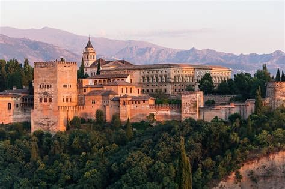
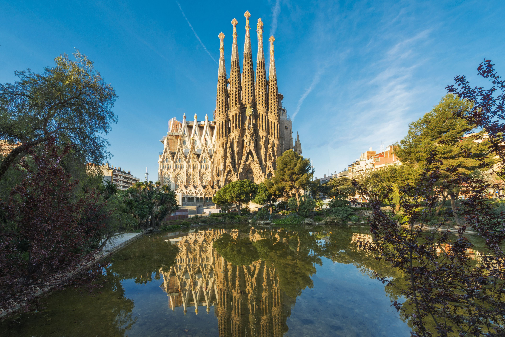
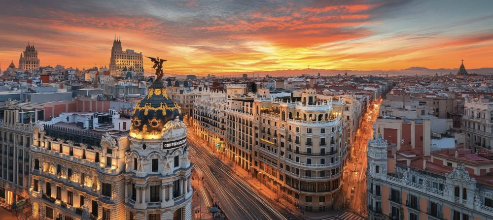

Situated at the end of the old riverbed Turia At day the city holds some of the most interesting and modern advancements of science, with movie theatres, museums, and of course art, both found in the natural world and inside of the human imagination. But at night it turns different, as its sleek elegance turns into flourishing festivity as it hosts a variety of different nightclubs and late-night revelers in its houses.
I was breath taken by just how elegant it seemed, the same way you’d respect an elder or admire the aged grooves on sea rock.
An Arabic fairytale situated near the clouds. It’s gardens and architecture have aged like fine wine, once a stronghold now a shared cultural experience, it’s glittering golden visage a reminder of strength and dignity.
Basílica i Temple Expiatori de la Sagrada Família, is a church under construction in the Eixample district of Barcelona, Catalonia, Spain. It is the largest unfinished Catholic church in the world. But that dosen't make it any less majestic when looking on in it's majesty.
Toledo is a fortress city with blinding heights and breathtaking beauty that can't be understated, named after the specalty smithing it was famous for in the medieval era, there are many shops that still sell master craft knives and utensils just like their forefathers in this fine city.
Paella is a staple of Spanish Cuisine. Rice with rabbit, shrimp, claims, any large variety of ingredients. It’s filling, fatty and so utterly fresh when you see it made in front of you. It tastes like Spain incarnate.
Fun Fact: Valencia is known to have special type of water supply, one that makes it so that the Paella’s taste is altered only to this locale. Many Spaniards staunchly claim there are no “real” authentic Paella’s made unless they use this water to cook the rice.
Spain was a lifechanging experience, as all travel is. It expanded my horizons and made me hope for a good while over change, real change that is entirely possible if effort and companionship is exerted instead of dissonance.
